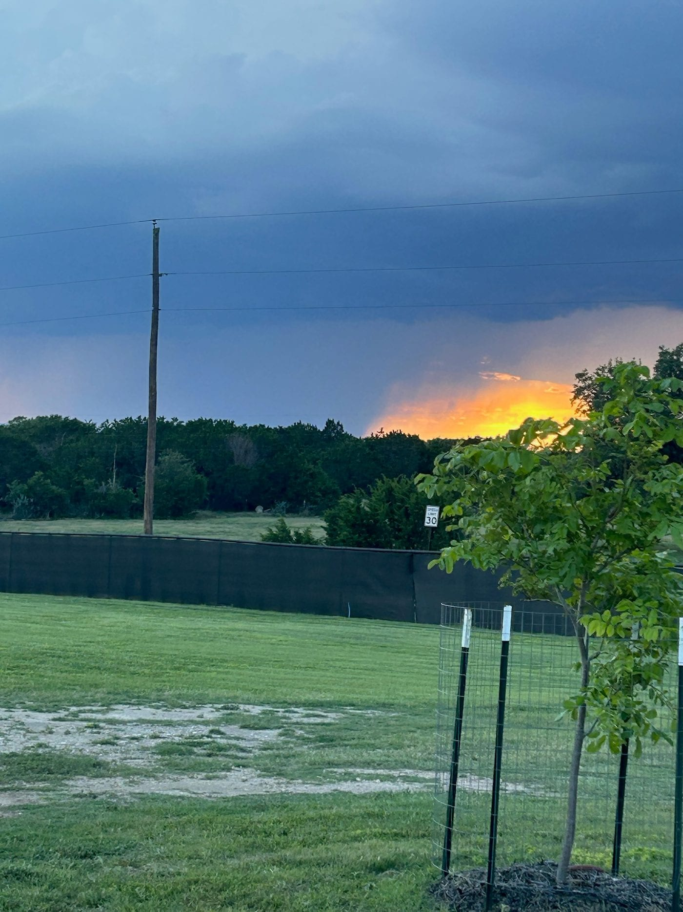

8.5 × 11 in, 1 page, trim size, no bleed. Ctrl/Cmd+P, set Destination to Save as PDF and leave Margins at Default; Chrome then hides the Paper size picker and the PDF comes out 8.5 × 11 in. A visible Paper size reading Letter means the Destination is a printer or the size rule did not take. Cut along the dashed line.
Safari ignores the page size: set Paper Size to 8.5 × 11 in by hand.
Sheet
